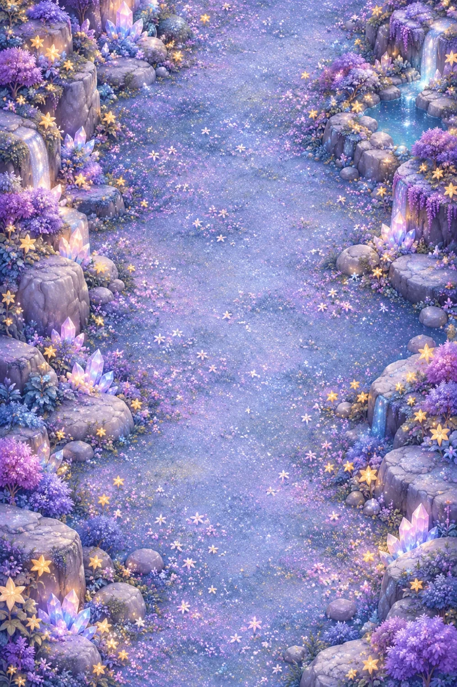
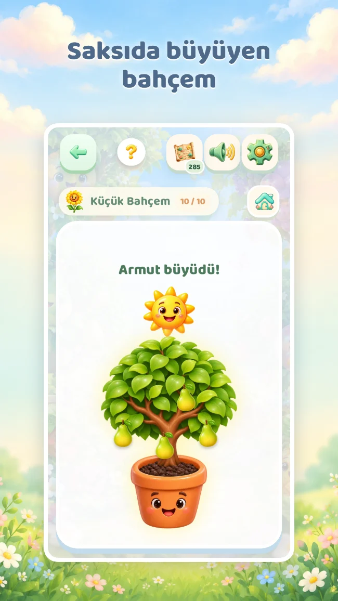
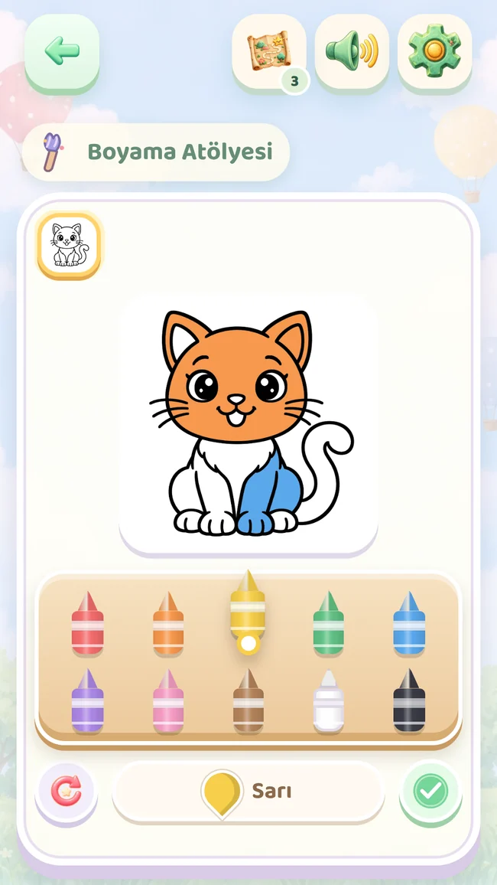
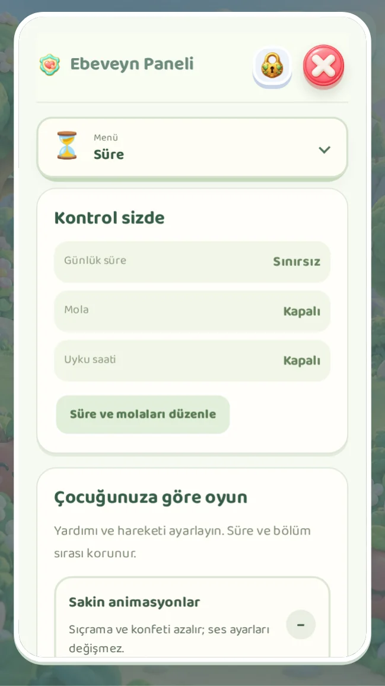

Birlikte daha fazlası
Her hafta üç ekran dışı öneri. 18 oyunun hepsinde, durağın resmine göre değişen Birlikte Oyna soruları.
Tam sürüm
Sevdiği oyunların devamı, yeni boyama ve çizim sahneleri ve her kardeşe kendi haritası. Tek seferlik Google Play satın almasıyla tam koleksiyona erişim.
Tek ödeme. Abonelik yok.
Ebeveyn alanı → Tam sürüm. Güncel fiyat Google Play’de gösterilir.




285 durak, 50 ücretsiz durağı da içerir. Her iki sürümde de duraklar sırayla açılır.
Tam sürümle gelenler
Ücretsiz sürümdeki her şey kalır. Tam sürüm bunların üstüne şunları ekler:
Her hafta üç ekran dışı öneri. 18 oyunun hepsinde, durağın resmine göre değişen Birlikte Oyna soruları.

Tüm ilk keşifler, tarihleriyle. Son 6 ayın her etkinliği ay ay. Her çocuk için ayrı sayfa.

Tüm boyamalar, sahneler ve birlikte aldığınız notlar; paylaşabileceğiniz tek bir A4 PDF.

Her şeklin ilk denemesi ve en son çizimi yan yana; puan yok, sadece anı.

Günlük süre, mola hatırlatıcısı ve uyku saati; her çocuk için ayrı ayarlanır.

Aynı cihazda her kardeşin kendi haritası, yıldızları ve resimleri.
Ücretsiz sürüm, 50 durakla oyunu tanımanız için tasarlandı. Tam sürüm aynı haritayı 285 durağa uzatır ve ebeveyn araçlarının hepsini açar.
| İçerik | Ücretsiz | Tam sürüm |
|---|---|---|
| Macera bölümleri | 25 | 150 |
| Boyama sayfaları | 4 | 26 |
| Yapboz resimleri | 2 | 12 |
| Hayvan Eşleri turları | 3 | 9 |
| Meyve Hafızası turları | 3 | 10 |
| Safari ipuçları | 2 | 9 |
| Balon turları | 3 | 12 |
| Hayvan Evleri turları | 2 | 8 |
| Düşün ve Ayır durakları | 0 | 25 |
| Müzik durakları | 3 | 6 |
| Bahçe bitkileri | 1 | 10 |
| Banyo dostları | 2 | 8 |
| Toplam oyun durağı | 50 | 285 |
| İçerik | Ücretsiz | Tam sürüm |
|---|---|---|
| Birlikte Oyna soruları | 2 oyunda örnek | 18 oyunun hepsinde, beşer soru |
| Haftalık ekran dışı aile planı | Haftada 1 öneri | Haftada 3 öneri |
| Günlük süre, mola ve uyku saati | — | Her çocuk için ayrı |
| Anı Kitabı (A4 PDF) | 2 eser, 1 not | Tüm eserler ve notlar |
| İlk ve son çizimler | 1 şekil | Tüm şekiller |
| Oyun geçmişi | İlk 2 kayıt | İlk keşifler ve 6 ay, tamamı |
| Aile profilleri | 1 çocuk | 4 çocuğa kadar |
| Beş dil, çevrimdışı ses, reklamsız | Dahil | Dahil |
Rakamlar uygulamanın 1.1.2 sürümüyle aynıdır. Tam sürüm ücretsiz içeriğin hepsini kapsar; duraklar her iki sürümde de sırayla açılır.

Birlikte, sizin ritminizde
Yetişkin kontrolüyle açılan ebeveyn alanı; süreyi planlamanıza, yapılanları görmenize ve oyunu birlikte geçirilen zamana dönüştürmenize yardımcı olur.
Günlük oyun süresi, mola hatırlatıcıları ve uyku saati; her çocuk için ayrı.
Tamamlanan etkinlikler ve oyun süresi. Bir gelişim testi veya yetenek puanı değildir.
Resimleri kaydedin, paylaşın; A4 boyama çıktısıyla birlikte üretmeye devam edin.
Tanıdık resimler, yeni kelimeler
Birlikte bir resim seçin, adını dinleyin, sonra evde aynı nesneyi bulun. Beş dil de ücretsiz ve tam sürümde kullanılabilir.
Beş dilin ses kayıtları da uygulamaya dahildir ve internetsiz çalışır.
Tek ödeme

Ebeveyn alanı → Tam sürüm bölümünde “Tam sürüm sizde · Ödeme tamamlandı · Tekrar ödeme yok” yazar; satın alma düğmesi bir daha görünmez.
Tek ödeme. Abonelik yok.
50 ücretsiz durakla oyunun ailenize uyup uymadığını görün.
Tam sürüm bölümünde kapsamı ve Google Play’in sunduğu fiyatı inceleyin.
Ödeme Google Play’de tamamlanıp doğrulanınca tam koleksiyona erişim açılır.
Abonelik ve otomatik yenileme yoktur. Bekleyen ödemeler tamamlanmadan erişim açılmaz. Satın alma hakkı geri yüklenebilir; oyun ilerlemesi cihazda saklanır.
Hayır. Tam sürüm tek seferlik bir Google Play satın almasıdır; abonelik ve otomatik yenileme yoktur. Yeni bir cihazda aynı Google hesabıyla “Satın almayı geri yükle” ücretsizdir. Satın aldıysanız oyundaki Tam sürüm bölümünde “Tam sürüm sizde” yazar.
Ücretsiz duraklar tekrar oynanabilir. Kazanılan çizimler ve madalyalar kalır. Tam koleksiyon, ebeveynin isteğe bağlı tek seferlik satın almasıyla açılır.
Oyunda ebeveyn alanını açın ve Tam sürüm bölümüne girin. Güncel fiyat ve ödeme onayı Google Play’de gösterilir. Bu web sitesi ödeme almaz; abonelik yoktur.
Tam koleksiyona erişim açılır; duraklar yine sırayla tamamlanır. Satın alma ilerlemeyi atlatmaz.
Android uygulamasının oyun içerikleri çevrimdışı çalışır. Satın alma ve geri yükleme internet gerektirir.
Aynı Google Play hesabıyla ebeveyn alanından satın almayı geri yükleyebilirsiniz. Oyun ilerlemesi ve çalışmalar cihazda saklanır; satın almayı geri yüklemek ilerlemeyi otomatik taşımaz.
Hayır. Yıldızlar oyun içi ödüllerdir. Ebeveyn özeti oynanan etkinlikleri ve süreyi gösterir; çocuğun gelişimini veya yeteneğini puanlamaz.